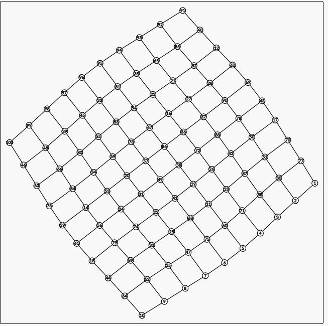

21/?
收录14年后的清华集训、集训队互测/作业、CCFWC、CTSC
完整肝完的：WC2019
清华集训（5）
「清华集训2014」玄学
首先$(a,b)=ax+b$这种信息是可以快速合并的，但是不满足交换律
如果可以离线的话，可以直接线段树分治，$时间O(nlog^2n)-空间O(nlogn)$
如果模数是质数，$a \ne 0$的时候，我们可以通过求出前r个操作、前l-1个操作来得到中间的操作的二元组，可以用主席树实现，$a=0$的话可以额外维护个线段树，$时间O(nlogn)-空间O(nlogn)$
然而模数不是质数的话，本来想CRT，但发现需要额外的空间存每个质因子相关的信息，时空都乘上10，对于本身就大空间的主席树来说不太可行
通过上面这么多失败的尝试，我们发现实际上要求我们找到一种只有合并的做法
考虑对于时间分块，那么散块直接枚举，完整的块内会有$O(siz)$个不同的区间，区间内打的标记是相同的，回答询问可以通过二分找到具体影响这个位置的标记贡献，按照时间顺序合并标记即可，$O(\frac{chg}{T}*T^2+qes*\frac{chg}{T}*log T)=O(m^{3/2}*log \sqrt m)$
将分块换成线段树，修改只在插满的时候向上合并，询问的时候二分或lowerbound，$时间O(nlog^2n)-空间O(nlogn)$
「清华集训2014」矩阵变换
设第i行选择的数是$num_i$，则非法情况就是说存在$pos_j(num_j) \le pos_i(num_j)<pos_i(num_i)$，发现此时$swap(num_i,num_j)$就能去掉这个非法情况了。发现这东西其实就是n行n种数字间的配对问题，联想到稳定婚姻问题，看能不能套上去
补习：
稳定婚姻问题：n男n女配对，每个人对其他人都有自己的满意度（没有平手），要求不存在不配对的两人使得将这两人配对后两人的满意度都提高
Gale-Shapley算法：不断重复直到所有人配对完毕，每次枚举所有单身男，向各自还没被拒绝过的最优秀女询问，两人连接当且仅当女未配对或此男比现男友优秀（女升原bf降）。首先肯定不会出现有人被所有人拒绝依然单身的情况，正确性也很好理解，因为最后比我gf更好的女生的bf一定比我好
令行偏爱左边的数字，数字偏爱能使自己较后的行，就能套上去了，$O(Tnm)$，code
「清华集训2016」Alice和Bob又在玩游戏
想着不到万不得已最好别用sg，怒肝3h讨论，调了十多组拍，最后还是没逃出gg的命运，感觉在博弈面前自己真的是命运的蝼蚁
$设sg(x)为子树sg值，sum(x)=\oplus sg(son_x)，sg(x)=mex_{x子树中的白点y} { (y到x的sum) \oplus (y到x但不包括x的sg) },O(n^2)$
只需在二进制下考虑，如果能维护Trie的话可以log找mex，发现y的Trie移动到x上就是整体异或$sg(y) \oplus sum(x)$
异或其实就是所有层的翻转标记，打个lazy标记，trie合并即可，复杂度分析和线段树类似，$O(nlogn)$
「清华集训2016」如何优雅地求和
关于连续点值，你可能需要对下降幂多项式有所了解，总之我们可以nlogn求出$f(x)$的下降幂形式
$$
特殊情况：\sum_{k=0}^nC_n^kx^k(1-x)^{n-k}=1 \\
a^{\underline b}(a<b)=0, Q(x^{\underline C})
=\sum_{k=C}^n k^{\underline C} C_n^k x^k (1-x)^{n-k}
=\sum_{k=C}^n k^{\underline C} \frac{n^{\underline C}*(n-C)!}{k^{\underline C}*(k-C)!(n-k)!} x^C x^{k-C} (1-x)^{n-k} \\
=n^{\underline C}x^C (\sum_{k=C}^n C_{n-C}^{k-C}x^{k-C}(1-x)^{n-k})
=n^{\underline C}x^C (\sum_{k=0}^{n-C} C_{n-C}^{k}x^{k}(1-x)^{n-k-C})
=n^{\underline C}x^C \\
f(x)=\sum_i a_ix^{\underline i},Q(f)=\sum_{i=0}^m a_in^{\underline i}x^i,O(nlogn)
$$
「清华集训2017」生成树计数
现在流行m=1e9，m相关复杂度的做法见这里
首先要掌握Prufer序列，对于确定的d序列（deg-1），$(\prod a_i^{d_i})\frac{(n-2)!}{\prod d_i!}(\sum w(d_i+1))(\prod w(d_i+1))*(\prod a_i)$，其中$w(t)=t^m$；
如果先不考虑那个求和，用EGF卷积分配d，$F(z)=\sum \frac{z^i}{i!}*w(i+1),ans=(\prod a_i)(n-2)!*([z^{n-2}]\prod F(a_iz))$
多项式乘法看起来不是很好做？上个Ln，那么就是求$T=\sum ln(F(a_iz))=\sum (lnF)(a_iz)$，$ans=(\prod a_i)(n-2)!*([z^{n-2}]Exp(T))$
设$P=lnF=\sum p_iz^i,T=\sum p_iz^i(\sum_{j=1}^n a_j^i)$，求等幂和$f_s=\sum a_i^s$在这里，为$O(nlog^2n)$
现在考虑那个求和，等价于某个多项式中$w’(t)=t^{2m}$，设$(\sum (\frac{F’}{F})(a_iz))*\prod F(a_iz)$，这里F’不是求导而是改用w’，左边那个和上面一样是一个多项式同时求$a_ix$的求值的和，$PP=\frac{F’}{F},\sum pp_iz^i(\sum_{j=1}^n a_j^i)$，用刚才算出的东西就能求了
综上所述，化生成函数是基本功，求等幂和我以前觉得很高手但现在也觉得是基本功，对同一个多项式，多个x求值的和用等幂和来做，第一次碰见但感觉推广性很好可以作为套路；然后观察多项式乘法用ln去化也挺套路的。
那么对我来说新奇的地方主要在于：先不考虑求和这个思路、这种求和看做修改某一项这样再次化作多项式求和
总而言之这个做法推广性不错，code
集训队互测/作业（7）
「集训队作业」无名
题意：给定质数p，定义$F(n,k)=在[n]={1,2..n}$中选k个的每种方案的乘积的和，对于$\forall i \in [0,p)，求存在多少个k \in [0,n]满足F(n,k)=i \pmod p$
其实如果当年做Tenka1 Programmer Contest 2019E Polynomial Divisors的时候真的搞懂了这题就不难了
为方便处理最后i=0的答案通过其他计算出
$$
\prod_{i=1}^n(1+ix)对本题等价于\prod_{i=1}^n (i+x)=(\prod_{i=1}^{p-1} (i+x) )^{a} \prod_{i=1}^{b<p-1} (i+x) \\分析\prod_{i=1}^{p-1} (i+x)，该式子的根为[0,p-1]，根据因式定理且最高项相等，等价于 x^{p-1}-1 \\只关心(x^{p-1}-1)^a=\sum_{t=0}^{\infty} C_a^t (-1)^{a-t} x^{(p-1)t}=\sum_{t=0}^{\infty} (\prod C_{a_i}^{t_i} (-1)^{(a_i-t_i)*p^i} ) [x^{不重要}]=\prod_i (\sum_{t_i} C_{a_i}^{t_i} (-1)^{(a_i-t_i)*p^i} )
$$
因为后面的多项式最大也是$x^{p-2}$，所以两个多项式的上标不会有影响，只需考虑值的分布，$ans[i*j]=\sum A_i*B_j$，$O(p^2log_pn)$
注意到p是质数，$A’_{log_Gi} \leftarrow A_i$即可用FFT优化卷积，$O(plogp)$，后面是倍增做上升幂（类似求一行第一类斯特林数）
「集训队互测2016」Unknown
好像是GDOI2019前zls搬过，然后鸽置的题。搭配2016集训队lzz论文食用更佳
首先很明显的共识是，在某个时间的区间询问，其实完全可以当做是在右端点刚加入那个时刻问的，相当于只有后缀询问
点积叉积无所谓（$(x,y) \to (y,-x)$），以点积为例考虑几何意义，相当于询问一个方向，要求出投影到该方向后最长的向量，答案一定在凸包上。题意保证了方向一定向下，所以我们只用维护凸包下面那个壳，因为相邻线段斜率不同可以用二分代替三分，下面只关心在凸壳上询问的次数（归并是线性的，但写sort不影响复杂度，因为询问次数才是做法的复杂度上界）
维护凸包不如维护上下两个凸壳简单，那么在两个凸壳上二分斜率即可，下面只关心在凸壳上询问的次数（归并是线性的，但写sort不影响复杂度）
个人倾向于把叉积改成点积，即把询问，然后考虑点积的几何意义，相当于给定一个方向，要求出投影到该方向后最长的向量，答案一定在凸包上。维护凸包不如维护上下两个凸壳简单，那么在两个凸壳上二分序列去找截距即可，下面只关心在凸壳上询问的次数（归并是线性的，但写sort不影响复杂度）
如果没有删除末尾：直接cdq毕竟要离线；「SDOI2014」向量集是强制在线的， 类似二进制分组的思想，线段树每个节点维护区间凸包，插满才需要向上合并
如果询问总是前缀：建出操作树（添加就新建叶子，删除就向上跳），在上面做树上cdq（序列上mid取中点，树上取重心，仅此而已）
Std1-在线：上面二进制分组线段树引入点骚操作——打损坏标记，每个损坏区间只在这层右边那个区间插满的时候才重构凸包，删除时给当前区间打上标记。注意到线段树每层所有完整的区间中最多只有最后那个区间会有标记（不完整的区间线段树本来就不可能访问到），询问碰到标记暴力两侧询问显然还是$O(log)$次不变，思考一下发现重构次数也不变（每过k次操作才能重构一次大小为k的区间）
一点启发：或许有一些有根树上到根路径问题，可以把一棵树看做是操作树，即末尾插删的序列问题
「集训队作业2018」三角形
见这里
「集训队作业2018」复读机
$$
\begin{aligned}
考虑EGF，ans&=(\sum_{i=0}^\infty [d|i]\frac{x^i}{i})^k n![x^n] \\
单位根反演&=\frac{n!}{d} (\sum_{j=0}^{d-1} \sum_{i=0}^\infty \frac{( \omega_d^j x)^i}{i})^k [x^n]
=\frac{n!}{d} (\sum_{j=0}^{d-1} e^{\omega_d^jx}) {[x^n]} \\
分类讨论d（题中k）的值，&然后二项式展开来计算，然后把e^t还原 \\
k=2,ans&=\frac{n!}{2^k}(\sum_{i=0}^k C_k^ie^{(2i-k)x}) [x^n]=\frac{1}{2^k}\sum_{i=0}^k C_k^i (2i-k)^n \\
k=3,ans&=\frac{1}{3^k}\sum_{i=0}^k \sum_{j=0}^{k-i}C_k^iC_{k-i}^j (i+\omega_3^1j+\omega_3^2(k-i-j))^n
\end{aligned}
$$
「集训队作业2018」小Z的礼物
看起来只能min-max容斥，式子就是$\sum (-1)^{|S|+1} \frac{骨牌总数all}{会影响到S的骨牌数in}$
观察到行数很小且影响是跟四连通相关，轮廓线$dp(i,j,S,in)=\sum (-1)^k$
$O(nm*2^n*nm)$，第一次写轮廓线，不过这题而言还是非常好写的，code
「集训队作业2019R4」青春猪头少年不会梦到兔女郎学姐
题意：n种颜色的球，每种颜色有$a_i$个，问所有排列的贡献和，一个排列的贡献为，首尾相连成环后极大同色长度乘积，$m=\sum a_i \le 2e5,n \ge 2$
UPD：意外地发现数据公开了，而且居然是在luogu
似乎是myh搬自校内XSY3156，集训队爷的git：zzq、wxh/myh)；来口胡一下
$$
\\ 设g_{i,j}=i个球分j段，每段长度乘积的带权方案，考虑长度乘积的组合意义——在每个段选一个恰选一个球，直接dp为O(nm)
\\ 构造双射，看做有i+j-1个球，选其中2j-1个染色，第奇数个染色点其实是选的球，
\\ 第偶数个染色点是选的隔板，能唯一还原成每种方案且不会漏，因此g_{i,j}=C_{i+j-1}^{j+j-1}
\\ 首先考虑链要怎么做，ans=\sum_{序列c表示实际情况} (\prod g_{a_i,c_i})*(ways=i种颜色每种c_i个相邻不同的方案数)
\\ ways还是容斥=\sum_{序列b，c_i \le b_i} ( \frac{(\sum b_i)!}{\prod (b_i!)} )(\prod (-1)^{b_i-c_i} C_{b_i-1}^{b_i-c_i})，丢进去就是 \sum_{b} ( \frac{(\sum b_i)!}{\prod (b_i!)} )(\sum_c \prod (-1)^{b_i-c_i} C_{b_i-1}^{b_i-c_i} g_{a_i,c_i})
\\ 对每个i做FFT优化卷积，然后分治FFT将n个多项式卷起来，O(\sum a_iloga_i+mlogm*logn)
$$
环的话可能是种套路，类似最小表示法，因为我们其实算的是每种权值对应的方案数，所以在方案数这里修一修
就是从强制第一个第一个球为1且和最后一个球不同，最后位移乘m，这样每种方案会被计算$b_1$次，除掉即可
而且也是因为算的是方案数，「第一个球为1且和最后一个球不同」=「第一个球为1」-「第一个球、最后一个球为1」，第一种$b1-=1$，第二种$b1-=2$
「2019 集训队互测 Day 5」国际象棋
用带状矩阵高斯消元看起来虽然是四方但常数巨大，估计是60pt，考虑怎么设未知数才能主元法
我们的目标是让8个方向只有一个还没有被线性表示，不过一般都是从边角开始推，而在边角的话其实方向极少，画一画很容易发现，设前两行和第一列就好了，$O((n+m)^3)$
WC（5）
「WC2018」通道
题意：给出三棵带权树，求$\max_{a,b} dis_1(a,b)+dis_2(a,b)+dis_3(a,b)$，$n \le 1e5$
「WC2018」州区划分
先预处理好每一种方案（用二进制表示）的可行性、总人口
$f(p1,k) \times sum^p(k)=\sum_{i|j=k} (f(p2,i)) * (okay(p1-p2,j) sum^p(j))$
因为是子集卷积，用fwt优化（有教程，第一维是二进制下1数量）
这东西你看起来需要做快速幂，但这样和暴力复杂度差不多了
不从快速幂的角度思考，想着是一个无限背包
保持前面的东西现在都是被fwt过的，那么你只需要枚举当前计算的p1，然后做出来当前的集合幂级数，然后Ifwt回去，把非法状态去掉，把分母补上去，再fwt回来
时间复杂度 $O(n^2 2^n)$
友情提示：判断合法性，记得要判断连通块数量……
code
「WC2019」数树
首先y=1的8pt是送的
对于op=0，显然答案为$y^{联通块数}$，等价于只有部分A的树边能用，dfs搜联通块数或直接统计边数即可，code-36pt
对于op=1，$\sum y^{联通块数}=y^{n}\sum y^{-边数}$，如果想求出$f_k=恰k条边$，很自然考虑容斥$g_k=至少k条边=\sum_{t=k} f_tC_t^k$
二项式反演得$f_k=\sum_{t=k} (-1)^{t-k}C_t^kg_t$，求g就是拼接n-k个联通块，还是列出Prufer序列的式子，$n^{n-k-2}(\prod siz_i)$
那就是CF917D Stranger Trees，$O(n^2)$60pt；但注意到我们只需要求$\sum y^{-k}f_k$而不需要具体每个k对应，所以考虑带权容斥
这是个经典的幂形式的系数，不会推见这篇文章最底下，总之枚举集合至少为T时，系数为$(y^{-1}-1)^{|T|}$（y=1除外，要特判）
$ans=y^{n}n^{n-2} (Y=\frac{y^{-1}-1}{n})^k (\prod siz_i)$，直接树上背包，还是 $O(n^2)$；只需要解决这个乘积，考虑其组合意义就是保留某些树边，然后每个联通块内必须选一个点，于是直接树形$dp(x,0/1)$表示根所在的联通块目前放过球没有；$O(n)$，code-68pt
对于op=2，如果你无脑写出有根树的F0、F1之类的，式子会很复杂没法拉格朗日反演；果然还是要投奔Prufer大师
考虑一个确定的siz序列能对应的树，$(\prod siz_i^{siz_i-2})*(n^{n-k-2} \prod siz_i)^2(y^{-1}-1)^k=(Y=\frac{y^{-1}-1}{n^2})^k(\prod siz_i^{siz_i})(n^{n-2})^2$
橘势顿时明朗了，$F=\sum_{i=1}^{\infty} \frac{i^i}{Y} \frac{x^i}{i!},ans=y^{n}Y^nn^{2(n-2)}*n$
$O(nlogn)$，code
整体来看，给非集选手送了很多分，而且只要你会prufer和经典幂权容斥，那么就算你不会dp也很可能可以搞出op=2
「WC2019」远古计算机
题意：五个宝库是指五个文件
task1：读题即可
|
|
task2：一开始以为是最小化代码长度结果不会做，经提醒才发现是最小化时间复杂度，那打表就好了
|
|
task3：最短路即可
|
|
task4：无脑建最短路树可得12pt
|
|
然后我就自闭了3h，因为我上面的while只需要执行5次（因为太自闭了偷看了spj的次数限制，是$7次>=1+5+1$），理论上能过；经akc提醒才发现一个点write完是不能立刻read的，所以需要修改那个while，此时你会发现要跑6次但只有45这个点是最后那次的，于是充分利用题答这个特性，将那条链拉出来选择不那么最短的，但冲突少的一个点就好了，数据极度稀疏所以ok
|
|
task5：人类智慧点

剩下就很容易了，$(10,9…1) \to (91,40,12..1) \to (91,92,93..100)$即可
「WC2019」I君的商店
智慧题
先想怎么搞一个合法解：首先抓出一个最大值mx（$a_{mx}=1$），然后每次取两个未确定的位置$x,y，询问[x \cup y,mx]及[x,y]，一定能知道x和y中一个$，最后一个根据奇偶性判断，权值和为$2(n-1)+(3+2)(n-1)=O(7n)$
发现过不去task3，性质是一段0和一段1且看起来像log，找mx的代价为2，继续用上面的方法，二分找断点，$3log_n$，可以获得85pt的好成绩
猜测可能有指向性，而且数据范围的100也很可疑，考虑怎么搞出一个单调序列
任取三个未知的$(x,y,t)$，不失一般性设$a_x \le a_y$。
还是考虑$[x \cup y,t]$，若小于等于，$a_x=0$，换别的x搞；
若大于等于，稍加讨论去寻找我们想要的单调序列，发现$a_y \ge a_t$，于是改成$(some \cup a_x,a_y)$，$a_t$加入递增序列中并假装知道，继续做下去，直到只剩下一个数未知 （最后一个$a_y$也要加入单调序列），二分将其加入单调序列，然后单调序列上二分
$(2+3)(n-1)+2*log_n+3*log_n$，完整代码
|
|
CTSC（4）
「CTSC2017」游戏
线段树维护矩乘，某种转移被ban时不要改另一种的概率，最后用贝叶斯对期望除以概率和（不是1），和概率同步记录$E_0,E_1，E_1 += P_1$，这样是个大小为4的矩乘，然而double-70pt跑得飞快精度不行（我觉得是概率过小），换成long double-50pt即使用zkw速度仍不行，想念998244353
学习了一下正解，看懂倒没啥，就是不知道为啥他的精度就没事，略感不爽。至于速度，其实这做法的常数不小，看loj评测记录是55开的
「CTSC2018」暴力写挂
题意：两棵有根树，最大化$depth(x) + depth(y) - (depth(LCA(x , y)) + depth′ (LCA′ (x, y)))$，$n \le 4e5$
注意到$dis_x+dis_y-dis_{lca}=\frac{1}{2}(dis_x+dis_y+dis(x,y))$，此时与lca无关了，可以树分治处理路径
点分不可行，但边分可行，因为边分只有两侧，可以每次放到第二棵树上建虚树跑黑白点dp
具体地，对于第一棵树上每次分治，求出每个点到分治中心距离g
则要dp求$\max_{col_x \ne col_y} (g_x+dis_x)+(g_y+dis_y)+[中间长度]-2dis’_{lca’}$
理论复杂度瓶颈在求虚树的排序，但实际上同样的做法，别人第4，我倒4，而且只能在uoj上通过，loj迷之re，luoguTLE（uoj永远滴神），code
关于我的速度，我是真的很懵逼，你要跟我说st表lca、vc常数大，但他们都是作为nlogn的系数的啊……
我猜测主要是因为总共有4棵树，我大量地使用了vc，然而o2并没有很给力啊，明明是nlogn的部分……毕竟虚树部分的常数应该很小（系统sort）
「CTS2019」随机立方体
前置：套路集锦-树形结构-9，似乎我的推导比别人的短些？
明显容斥至少k个，然后是基本功：$设V=nml，ans=P_n^kP_m^kP_l^k*f_k$
$f_k$=通过分配k个极大数间大小关系，得出k个菊花的树上编号合法概率
考虑最大值也就是根的大小，易得$f_0=1,f_k=f_{k-1}*\frac{1}{V-(n-k)(m-k)(l-k)}$，先写了个log的80pt验一发，签到失败.jpg
「CTS2019」氪金手游
相当于给出一个基图是树的图，将时间填上去后，满足每个点的出现时间都早于子树内其他点
一开始看错题以为是内向树，遂写了个$\prod \frac{w_i}{子树和}$的暴力（套路集锦-树形结构-9），荣获爆零，签到失败.jpg
感觉还是有点妙的吧：即使有反向边，通过容斥，就能看做正向边或忽略成森林
于是$(-1)^k$容斥，做树形背包，存子树内大小即可，$O(n^2)$，code